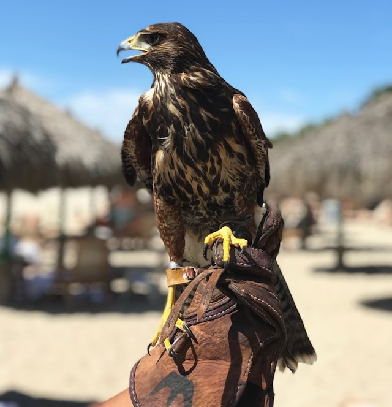

Hjem
2 Side
Side 3
Oppsummering
Min Andre Side
Jeg liker og spille video spill og jakte, liker også biler.

Info!
Habitat:Kystfarvann i Atlanterhavet og Nordsjøen.
Info!
Habitat:Kalde elver og havet, spesielt i Nord-Amerika og Europa.
Info!
Habitat:Ferskvann og saltvann, ofte i innsjøer og elver.